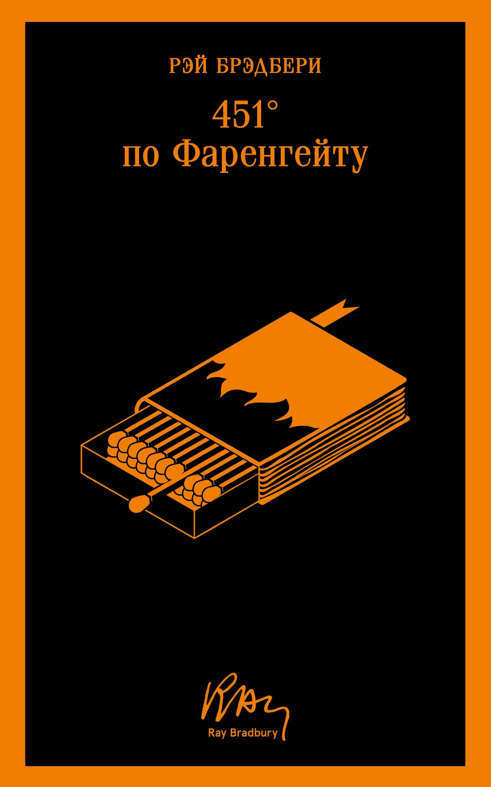

Фантастический роман о будущем, в котором книги запрещены, а знания уничтожаются.
«451° по Фаренгейту» — это история о мире, где книги считаются опасными и подлежат уничтожению. Главный герой, пожарный Гай Монтэг, начинает сомневаться в системе и ищет истину. Роман поднимает темы ценности знаний, свободы и роли культуры в жизни общества.
© 2026 Все права защищены